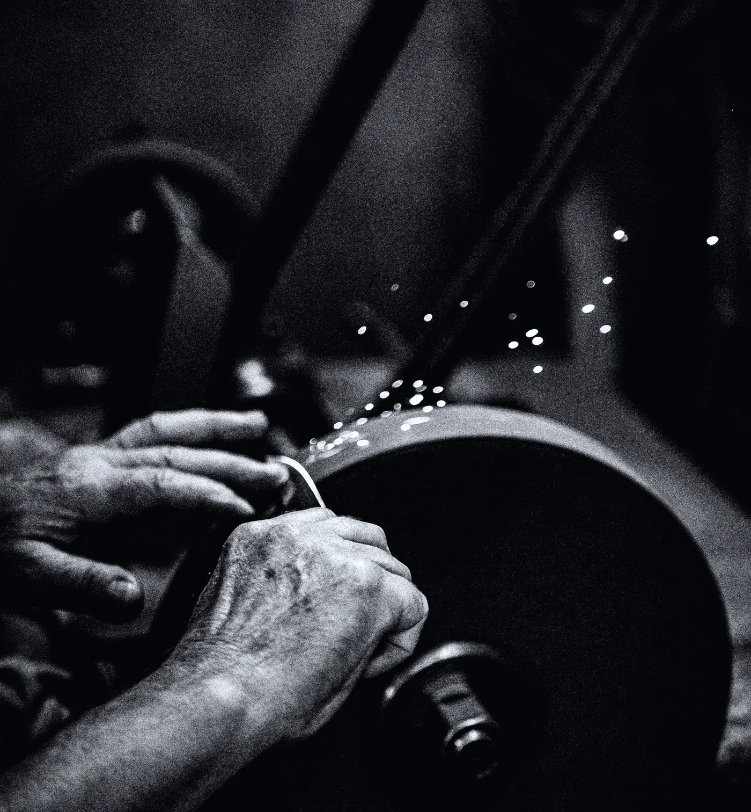

The works — Arch 41, Deptford
Seven stages. Nine weeks. Two people.
Nothing here is proprietary. Rendering fat is a four-thousand-year-old procedure that a child could follow, and the only reason the result is worth £185 is that every stage is done slowly, by somebody who is standing there, in a batch small enough to throw away.
Batch 01 ran from 6 October to 11 December 2026. Input: 14.00 kg. Output: 1.40 litres at 22% concentration, which is 1,000 bottles with 42 ml spare. Waste: 2.1 kg of cracklings and one carboy we dropped.

The seven stages
01 · Collection · Tuesday, 05:50
Fourteen kilos of kidney suet, collected from a cutting floor at Smithfield that has been there since 1868. It goes straight into the van cold. Suet that warms up on the way loses the thing that makes it worth rendering.
02 · The break · Tuesday, 08:15
Trimmed of membrane, then cut down to roughly two centimetres. Smaller pieces render faster and cleaner; a food processor would be quicker and would also heat the fat, so it is done with a knife on a board, which takes an hour and forty minutes.
03 · The render · Tuesday, 10:00–14:00
Water, a handful of salt, four hours over the lowest gas the ring will hold — about 70 °C. Hotter and the fat browns, and a browned tallow smells of a roasting tin for the rest of its life. This is the only stage where a mistake cannot be undone.
04 · The skim · throughout
A grey collar of impurity rises at the rim and has to come off with a ladle before it cooks back in. Somebody stands at the pot for the whole four hours. There is no version of this that scales, which is why the batch is a thousand bottles and not ten thousand.
05 · The clarify · Wednesday
Poured warm through calico, set overnight, lifted off the water, then poured through fresh calico a second time. What comes out is white, hard, and — if the four hours were done properly — completely odourless. Odourless is the whole point: it is a carrier, not an ingredient.
06 · The tincture · nine weeks
Clarified tallow takes scent the way butter takes garlic: completely, and slowly. Orris butter, labdanum, beeswax absolute, hay and cut grass go into glass carboys under the bench in October and are not touched until the second week of December.
07 · The fill · December, by hand
Forty-eight bottles an hour, two people, glass from a works in Knottingley. When the batch is gone there is not another until the following October.

The blades are ground on the same wheel every Monday. A dull knife tears the membrane instead of cutting it, and the torn membrane is what ends up in the pot.

Four hours at the pot with a ladle. The grey collar comes off about every twenty minutes for the first two hours, then less.

Measured in 500 ml lots so a failed lot costs half a litre rather than the batch. Two lots were thrown out in October.
- Input14.00 kg suet
- Yield11.8 kg clarified tallow, 84%
- Waste2.1 kg cracklings
- Output1.40 L at 22%
- Bottles1,000 at 50 ml
- Elapsed66 days
After — what you get
The same afternoon, in a bottle you would not guess at.
Everything above happened in a railway arch with the door open. None of it is romantic while it is going on — it is hot, it takes all day, and it smells of a butcher's shop until stage five. The bottle at the end carries no trace of that, which is either the point or the trick, depending on how generous you are feeling.
 Stage 06 — the tincture rack, week seven
Stage 06 — the tincture rack, week seven